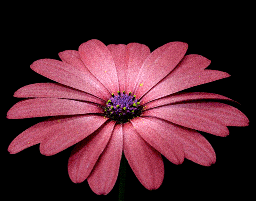

Subtopik 1: Latar Belakang & Pemilihan
【Level 1】Monster Lapar Bunga Raya!
Beri Monster makan 3 fakta BENAR tentang Sejarah & Latar Belakang Pemilihan Bunga Raya! Tarik jawapan betul ke dalam mulut Monster!
Subtopik 2 & 3: Warna & 5 Kelopak
【Level 2】Bakul Pengkategorian Bunga!
Isikan item/fakta berkenaan Bunga Kebangsaan ke dalam bakul yang betul!


🔴 Nama & Warna Merah
🌺 5 Kelopak Rukun Negara
📜 Sejarah & Lain-lain
Subtopik 4: Simbol Dalam Kehidupan
【Level 3】Memancing Simbol Bunga Raya!
Klik atau pilih ikan jawapan yang betul berdasarkan soalan kegunaan Bunga Raya pada bot!

Kemajuan Pancingan: 0 / 6 Soalan
🪝
👨🎓🌺👩🏫
SOALAN SIMBOL & KEGUNAAN:
Loading...
🎉 SYABAS & TAHNIAH! 🎉
Kuiz Bunga Kebangsaan Selesai!
Jumlah Markah: 0
Gred: A+ (Cemerlang)
Anda telah menguasai latar belakang, warna merah, 5 kelopak Rukun Negara, dan kegunaan simbol Bunga Raya dalam kehidupan rakyat Malaysia!